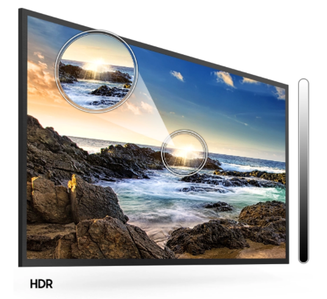

Resolução Full HD com nova plataforma Smart TV fácil e intuitiva
A melhor plataforma SmartTV
Sua Smart TV¹ com conteúdos ainda mais fáceis de acessar
Acesse suas músicas, filmes, notícias, jogos e redes sociais tudo em uma única tela, com o sistema operacional TIZEN.
HDR para brilho e contraste
Veja os detalhes em cenas claras ou escuras
Brilho e contraste para você aproveitar seu programa tanto nas cenas mais escuras quanto nas de alta luminosidade.
Resolução Full HD
Aproveite seus programas em uma resolução 2 vezes maior que as TVs HDs.
Imagens realistas para você assistir seus filmes e séries preferidas.

Ficha técnica
| Código | 1704351001 |
| Código de barras | 7892509114301 |
| Recursos de Vídeos | Processador Hyper Real, 60Hz, PQI (Picture Quality Index) - 1000, HDR, Mega Contraste, Micro Dimming Pro, Contrast Enhancer, Modo Filme e Modo Natural |
| Recursos/Funcionalidades | Samsung SMART TV, Navegador (Web Browser), Espelhamento do Smartphone para TV, Acessibilidade - Guia de Voz (Inglês - EUA, Português - Brasil), Ampliar, Aumento de Contraste, Aprenda a mexer no Controle Remoto da TV (Inglês - EUA, Áudio de múltiplas saídas, Cores negativas, Preto e Branco, Aprenda a mexer no Menu (Inglês - EUA, Zoom de vídeo, Digital Clean View, Busca automática de canais, Desligamento Automático, Legenda, Connect Share (HDD), ConnectShare (USB 2.0), Idioma (Local - Brasil - Português), Compatível com HID USB, IPv6 Support, Sensor Ecológico, Selo Procel ("A"). |
| Consumo (KW/h) | 100 |
| Recursos de Áudio | Dolby Digital Plus, Potência Sonora (20 W RMS), 2 Canais, Multiroom Link |
| Tipo de TV | Smart TV |
| Tecnologia da Tela | LED |
| Polegadas | 40" |
| Monitor | Full HD |
| Taxa de Atualização | 60Hz |
| Taxa de Atualização com Tecnologia | 60Hz |
| Quantidade de entradas USB | 1 entrada traseira |
| HDMI | 2 entradas traseiras |
| Outras conexões | Entrada de Composto (AV), Ethernet (LAN), Saída de Áudio Digital (Óptica), Entrada de RF (terrestre/entrada de cabo), HDMI Quick Switch, Rede sem fio integrada, Anynet+ (HDMI-CEC) |
| Wi-Fi Integrado | Sim |
| Conversor Digital Integrado | Sim |
| PIP (Picture in Picture) | Não |
| Timer On/Off | Sim |
| Sleep Timer | Sim |
| Closed Caption | Sim |
| Principais aplicativos | Youtube, Netflix, Globo Play. Os aplicativos divulgados podem não estar disponíveis em todas as Smart TV Samsung. A plataforma Samsung Smart TV é usada pelos provedores de conteúdo para disponibilizar aplicativos. Os provedores de conteúdo podem remover aplicativos da plataforma Smart TV ou parar de dar suporte a qualquer momento. O prazo entre o lançamento e a disponibilização de um aplicativo pode variar. |
| Potência do Áudio (RMS) | 20 |
| Cor | Preto |
| Peso liq. aproximado do produto (Kg) | 7kg |
| Conteúdo da Embalagem | 1 TV, 2 pés, Controle remoto, Pilhas AAA 2x (opcional), manual do usuário, adaptador de antena, cabo de força |
| Garantia do Fornecedor | 12 meses |
| Dimensões do produto - cm (AxLxP) | 0,52x0,91x0,77cm |
| Referência do Modelo | UN40T5300AGXZD |
| SAC | 4004-0000 (Capitais e Grandes Centros) ou 0800 124-421 (Demais cidades e regiões) |